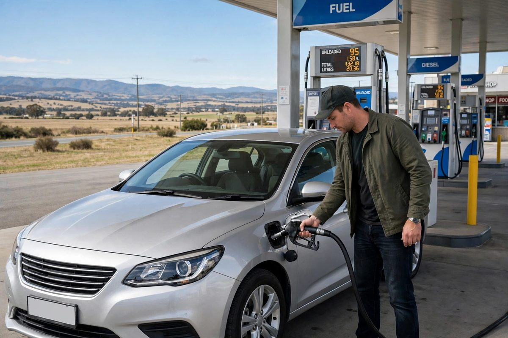
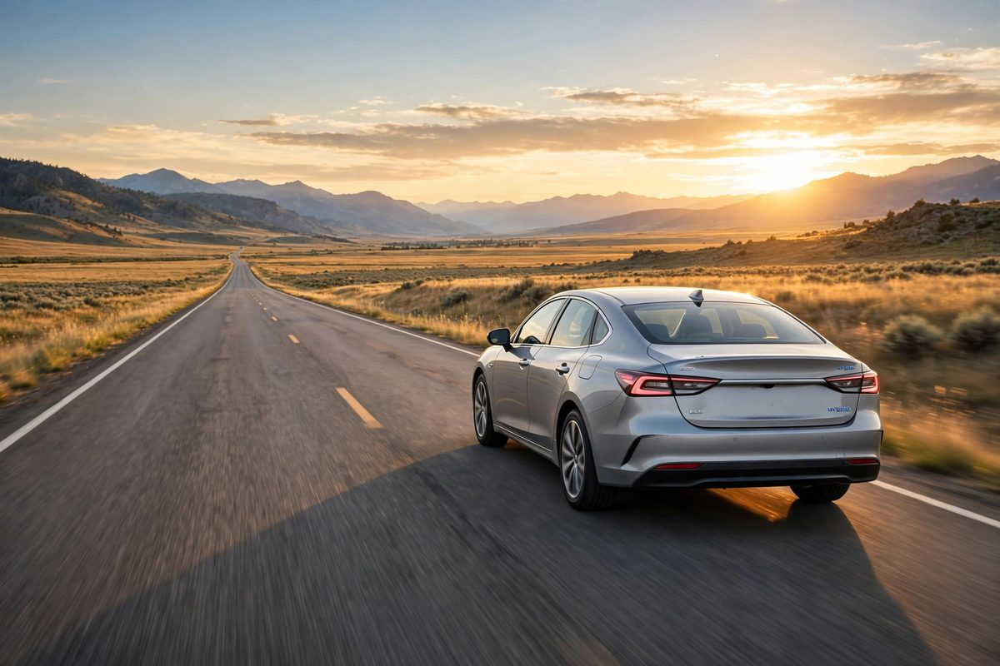

Home › Blog › How to Calculate MPG
How to Calculate MPG: A Simple Step-by-Step Guide

Miles per gallon — MPG — is the simplest way to know how much fuel your car really uses: how far you go on one gallon, and what every trip costs you.
You do not need any special tools to work it out — just your trip meter, a full tank of fuel, and one simple division. This guide shows you how to calculate MPG step by step, how to check your answer, what a good number looks like, and what makes your MPG go up or down.
What Is MPG?
MPG stands for miles per gallon: how far your car travels on one gallon of fuel. A car that does 30 MPG travels 30 miles on each gallon; one that does 40 MPG goes 40 miles on the same gallon, so it uses less fuel for the same trip.
Fuel economy, gas mileage and fuel efficiency all mean the same thing: how little fuel your car needs to get you where you are going. A higher MPG is better — fewer fill-ups, lower fuel bills and fewer emissions from the same miles.
In the United States, MPG is measured with US gallons (3.785 litres). The UK gallon is bigger, so British figures are not directly comparable.
The MPG Formula
The formula has just one step. Divide the miles you drove by the gallons of fuel you used.
MPG = miles driven ÷ gallons of fuel used
For example, 300 miles on 10 gallons is 300 ÷ 10 = 30 MPG. That is the whole calculation. The hard part is not the maths — it is getting the two numbers right, and the rest of this guide is about measuring them properly.
How to Calculate MPG in 4 Steps
The most reliable way is the fill-up method. It uses the gallons the pump measured, not a guess from your dashboard, and it works for petrol, diesel and hybrid cars alike.
Step 1 — Fill the tank and reset the trip meter
Fill your tank completely, until the pump clicks off, then reset your trip meter to zero. If your car has no trip meter, write down the odometer reading instead.
Step 2 — Drive normally
Drive as you usually do until you need fuel again — try to use at least half a tank, because a longer distance gives a better result.
Step 3 — Fill the tank again and note the gallons
Fill the tank again, stopping at the first click. Note how many gallons it took — that is the fuel you used since the last fill-up.
Step 4 — Divide miles by gallons
Divide the miles on your trip meter by the gallons from step 3. For example, 342 miles ÷ 11.4 gallons = 30 MPG.

Want to skip the maths? Try our free MPG calculator — enter your miles and gallons and it works out your MPG, L/100km and cost per mile for you.
The U.S. Department of Energy publishes the same method on FuelEconomy.gov: an odometer reading that moves from 32,645.1 to 33,001.3 miles (356.2 miles) on a 13.5-gallon fill-up gives 26.4 MPG.
No Trip Meter? Use the Odometer
If your car has no trip meter, use the odometer instead. Write down the reading at one full tank, then again at the next full tank. Subtract the first reading from the second to get the distance you drove, then divide by the gallons. For example, 41,250 miles to 41,562 miles is 312 miles, and 312 ÷ 11.4 gallons = 27.4 MPG.
How to Get a More Accurate Number
One tank gives you a rough answer — a single fill-up can be off if the pump clicks early or the car is parked at an angle. Two simple habits make your number much more reliable.
First, average over two or three fill-ups: add up all the miles and gallons, then divide the totals once. If one tank looks odd, the average smooths it out.
Second, fill up the same way every time: the same pump when you can, stop at the first click, and do not top off. Stopping at the same point keeps every reading fair.
What about a partial fill-up? Say you add 5 gallons one morning, then fill the tank properly a few days later with 8.1 gallons. Add all the fuel together (13.1 gallons) and divide the full distance since the last full tank: 368 miles ÷ 13.1 gallons = 28.1 MPG. Never work out MPG from a partial fill-up on its own — 5 gallons tells you nothing about the fuel used since the last full tank.
Converting MPG to L/100km and km/L
Much of the world uses litres per 100 kilometres (L/100km) instead of MPG. A higher MPG is better, but a lower L/100km is better, because it means fewer litres for the same 100 km.
To convert, divide 235.214 by your MPG: 30 MPG is 235.214 ÷ 30 = 7.8 L/100km. For kilometres per litre, divide 100 by the L/100km figure: 100 ÷ 7.8 = 12.8 km/L.
Here are some common figures, side by side:
| MPG | L/100km | km/L |
|---|---|---|
| 20 | 11.8 | 8.5 |
| 25 | 9.4 | 10.6 |
| 30 | 7.8 | 12.8 |
| 35 | 6.7 | 14.9 |
| 40 | 5.9 | 17.0 |
| 50 | 4.7 | 21.3 |
Some drivers use gallons per 100 miles instead: divide 100 by your MPG. A car that does 30 MPG uses 3.3 gallons every 100 miles. This shows the savings clearly: going from 20 to 25 MPG saves about 10 gallons over 1,000 miles, while 40 to 45 MPG saves under 3 gallons.
US MPG vs UK MPG
American and British MPG are not the same number. The US gallon holds 3.785 litres, while the UK (imperial) gallon holds 4.546 litres — about 20% more — so the same car shows a higher MPG figure in the UK. To convert, multiply US MPG by 1.201: 30 US MPG is about 36 UK MPG.
What Is a Good MPG?
It depends on the car. As a rough guide, most modern petrol cars return about 25–35 MPG in mixed driving, small cars and hybrids often 40–55 MPG, and large SUVs or trucks 15–25 MPG.
The best comparison is your own car over time. If it usually does 32 MPG and drops to 26, something has changed — a new route, colder weather, low tire pressure, or a service that is due. The official figure comes from lab tests, so real driving almost always returns a lower number.
Why Your MPG Changes
Your MPG is not a fixed number — it moves with how and where you drive, and with the condition of your car. These are the factors that matter most, according to the U.S. Department of Energy.
Driving style
Smooth, steady driving uses far less fuel than sharp acceleration and hard braking: aggressive driving can lower gas mileage by roughly 15% to 30% at highway speeds and 10% to 40% in stop-and-go traffic. Looking ahead and easing off early for red lights makes the biggest difference of all.
Speed
Fuel economy drops quickly above 50 mph, because wind resistance grows fast: each 5 mph over 50 mph lowers it by about 7%. Slowing from 75 to 65 mph is often the easiest fuel saving there is.
City vs highway
Short city trips with lots of stops use much more fuel per mile than long highway runs, and a cold engine uses extra fuel at the start of every trip. Compare city tanks with city tanks.
Tire pressure
Under-inflated tires increase rolling resistance and use extra fuel. Keeping them at the proper pressure improves gas mileage by about 0.6% on average, up to 3% in some cases. Check pressures monthly — the correct figure is on the driver’s door sticker.
Weight and roof racks
An extra 100 pounds can reduce your MPG by about 1%. A large roof box is worse: it can cut fuel economy by 2% to 8% in the city, 6% to 17% on the highway, and 10% to 25% at interstate speeds. Take roof racks off between trips.
Cold weather, idling and maintenance
Engines use more fuel when cold, so short trips in winter are where careful driving makes the biggest difference — combine errands into one trip so the engine stays warm. Idling can use a quarter to a half gallon of fuel per hour, so turn the engine off when parked, and use the manufacturer’s recommended grade of motor oil — it can improve mileage by 1% to 2%.
FuelEconomy.gov’s fuel-saving tips cover all of these in more detail.
Your MPG vs the Dashboard and Official Figures
The MPG figure on your dashboard is an estimate from sensors and driving conditions, and it is usually a little optimistic. The official figure comes from controlled lab tests so cars can be compared fairly. Either way, the fill-up method — miles driven divided by gallons used — gives you your real number, because it is based on the fuel the pump actually measured.
What Your MPG Costs You
MPG is money: your cost per mile is the fuel price divided by your MPG. At $3.50 a gallon and 30 MPG, each mile costs about $0.12.
Over a year, the difference adds up. Driving 12,000 miles at 30 MPG uses 400 gallons — $1,400 at $3.50 a gallon. The same 12,000 miles at 25 MPG uses 480 gallons and costs $1,680: $280 more for the same driving.
A single trip is easy to price too: a 100-mile trip at 30 MPG uses 3.3 gallons, about $11.67 at $3.50 a gallon. Knowing your real MPG takes the guesswork out of every trip.
How to Improve Your MPG
You do not need a new car to use less fuel. Small changes add up, and the best ones cost nothing:
- Drive smoothly: gentle acceleration, early braking, and a steady speed.
- Slow down on the highway: dropping 10 mph can save more fuel than any gadget.
- Check your tire pressure once a month, when the tires are cold.
- Take the roof rack off when you are not using it, and clear heavy items from the trunk.

Frequently asked questions
How do I calculate MPG without a trip odometer?
Use the odometer instead. Write down the reading at one full tank, then again at the next. Subtract the first reading from the second to get the miles you drove, then divide by the gallons it took to fill the tank.
How many miles do I need to drive for an accurate MPG?
Drive at least half a tank before you fill up again. For your most reliable figure, add up two or three fill-ups and work out the average.
Is 30 MPG good?
Yes, for most petrol cars in mixed driving. As a rough guide, modern petrol cars return about 25–35 MPG, small cars and hybrids often 40–55 MPG, and large SUVs or trucks 15–25 MPG. The best comparison is your own car: if your MPG drops suddenly, check tire pressure, your route, or a service that is due.
Why is my MPG lower in winter?
Cold engines use more fuel, and short trips never let the engine warm up properly. Winter driving also means more idling and heater use, and sometimes winter tires. Your MPG usually climbs back up in spring.
Does the MPG on my dashboard match the fill-up method?
Not usually. The dashboard figure is an estimate from the car’s sensors and is often a little optimistic. The fill-up method — miles driven divided by gallons used — is based on the fuel the pump measured, so it gives you your real number.